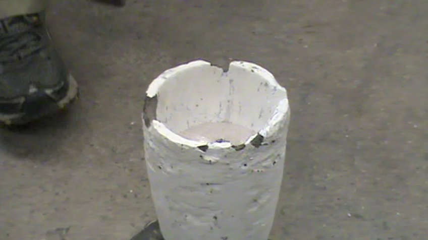

Making of a Kopis Replica
Blade Procedure
A 6 foot long rod of low carbon mild steel was cut into three equal pieces to allow for multiple blades in the event of an error. The rod was cut at an angle so that each piece had a point on one end to serve as the point of the blade.
A large scale drawing of the Kopis was created to serve as a plan, depicting specific shape and dimensions, as shown below:
Figure 2 - Drawing of Sword.
The dimensions were used as a guideline, but they were approximated because it is almost impossible to shape a sword free-hand into the exact dimensions. Each cut piece of metal was filed at the point in order to smooth out the rough edges left behind by the rough cutting.
Figure 3 - Filing Down the Edges of a Cut Metal Piece.
The piece of steel was placed into a coal fire and left to heat. Once the metal was bright yellow, it was taken out and placed on an anvil to be shaped with a hammer. The metal was hammered and shaped until it turned bright red, and then it was placed in the fire again.
The blade was flattened by tapping the metal with a small hammer and then hit in the same spot forcefully and repeatedly with a large hammer. The metal was then hammered with a one handed medium sized hammer for shaping.
The steel was hammered in the center of the bar in order to flatten it. To achieve the big curve, the steel was hammered along its edge to spread out only on one side. The rod was then turned and balanced on its edge and hammered along the curve to straighten out the back of the blade.
A routine of heating and hammering the metal was repeated until the desired shape was achieved.
Case Hardening
Once the desired shape was made, the blade underwent case hardening. The metal was heated until it was white hot, and then dipped into Kasenit powder, a special compound used for case hardening. The kasenit powder cooled the outer surface of the metal. Once it was coated in powder, the metal was again heated until it was white hot, and quenched in water.
Handle
A duplicate of the desired handle was formed into a polystyrene pattern. A large block of polystyrene was cut down into a general shape with a knife. The specific shape and details were achieved by sanding the resulting block of polystyrene with sandpaper. However, after successfully casting a handle in its entirety for practice, we had to decide a way to make the polystyrene handle in two pieces that after casting could be put together over a protruding end of a sword so that it could be fastened properly. Figure 50 shows the original shape of the handle using the polystyrene material that was originally used as a practice run.
The figure below shows the handle made out of polystyrene with the two halves that were used to make the actual handle.
Originally, we had decided to use bronze for our handle because that was the typical metal used in that time period that we studied. However, once we bought the bronze which was called Everdur Alloy C873 from the same company that we purchased the casting materials from, we tried to melt it. Its melting point is about 1260°C. Once we tried to melt it with help from Xiang Chen, we realized that the metal was not melting and was turning into a crumbly, sandy type material. We assume it is a result of not being able to have a furnace that could heat far enough to melt it efficiently, even though the furnace’s maximum temperature capacity was around the melting point of the bronze. Thus, we also think it might be due to poor quality of the bronze. Due to complications with melting the bronze, we decided to use aluminum to cast the handle with. We used aluminum alloy 319 and followed the casting procedure as we will describe. We purchased our casting materials from Lost and Foundry in Spokane, WA and followed their casting procedure on their website which was published in 2008. Our casting procedure, therefore, will be very close to what they have written. Figure 52 shows an image of the bronze metal after being placed inside the container located in the furnace that holds the melting metal. As seen, the bronze does not look like metal, but clay. It also shows when the bronze was melted and how the metal did not look like liquid, but looked like little clumps of dust.
A polystyrene pattern of the desired handle was placed into the bottom half of a wooden box and dusted with parting dust, which is a material that is used to repel moisture. Parting dust was used as a substitute for a refractory compound spray. The figure below shows the image of the handle in the wooden box with the parting dust placed over it. The images were of the practice run handle since it was documented fully.
Figure 10 - Practice Handle with Parting Dust over it in the Casting Box.
Special casting sand that had been sifted through a sieve was used to create a thin layer over the pattern. The wooden box was then filled to the top with non-sifted sand that was free of lumps. Using a blunt wooden paddle, the sand was packed down hard. The box was then filled with sand again to about two inches above the top. The sand was then packed down hard again, and the excess was scraped off to create a level surface. Figure 54 shows the sand being sifting and packed into the box.
Figure 11 - Sand Sifted on Top of Handle and Packed into Casting Box.
A temporary bottom was placed on top of the sand surface and the box was inverted. The top half of the box was attached. A shallow circle was imprinted in the sand using a hollow hole cutter, and an X was marked on the other side as an escape hole for the molten metal as shown in the figure below.
Figure 12 - Circle and X Markings with Handle in Sand.
Once these two imprints were made, the steps related to filling the box with sand was repeated for the top half of the box. The two halves of the box were then taken apart to reveal the pattern on the inside with the top half of the box having the imprinted circle and X. A small tunnel was dug in the bottom half of the box leading from the entry hole to the escape hole, with a path in the middle leading to the polystyrene mold. The large entry hole and the small escape hole were drilled all the way through the sand in the top half of the box to reach the tunnel. All rough edges created by digging in the sand were smoothed out with a spoon. The figure below shows half of the box with the hole for pouring placed into it.
Figure 13 - Larger Hole for Pouring Metal.
The two halves of the box were put back together with the holes on top. Molten aluminum was poured in small increments into the large entry hole, which took the place of the polystyrene. The metal was poured into the entry hole until it could be seen coming out of the escape hole. The figure below shows the melted aluminum metal and the after it was poured into the casting box.
|  |
The entire setup was left standing to cool for awhile and then it was disassembled and cleaned. The resulting handle was freed from the sand with tongs. The excess aluminum formed by the shape of the tunnel and the holes was separated from the actual desired handle with a hammer.
The casting procedure was carried out at first using one polystyrene mold of the kopis handle. The purpose of the first trial was to familiarize ourselves with the process and to make sure there were no problems with the particular materials or procedures used. The second time the procedure was attempted, it was done twice in order to create two sides of the handle separately. A polystyrene handle was formed and cut down the middle to form two halves. On the flat side of each half, an indent was made to accommodate the end of the blade intruding into the handle. Figure 58 shows the final handle product after the practice run on the left and the final handle product for the actual run with the resulting two halves on the right.
 |
| Figure 15 - | (Left) Finished Practice Run Handle, |
| (Right) Finished 2 Halves of Final Actual Handle. |
Finished Sword
Figure 16 - Finished Handle on Sword.

Integrative Materials Design Center - Worcester Polytechnic Institute